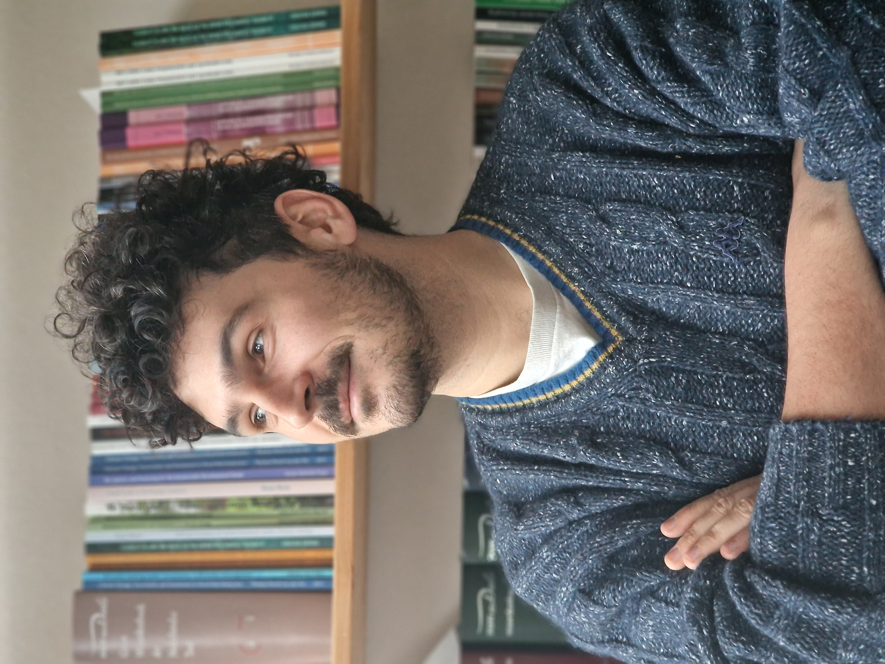

Paolo Libenzio Brignoli
Postdoc
ETH Zurich, Agricultural Economics and Policy Department
AI and machine learning for agricultural policy evaluation
I am a postdoctoral researcher passionate about bridging the gap between advanced econometric methods and practical agricultural policy. My research combines machine learning techniques with causal inference to evaluate agricultural policies and predict commodity markets. Growing up on a family farm in the hills south of Milan, I developed a deep connection to agriculture that drives my research today. With experience in both practical farming and cutting-edge research, I bring a unique perspective that connects theory with real-world application, focusing on improving policy-making and farmers' livelihoods.
